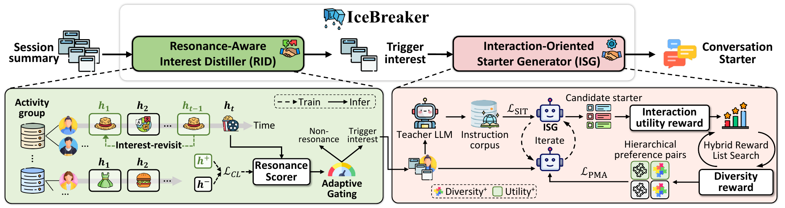

01研究背景与问题定义
用户打开对话产品却没有明确的问题时，系统面临的不是“怎样回答”，而是“怎样让用户愿意发出第一句话”。论文观察到约两成访问者没有启动会话便离开；已经发生的对话可以依赖即时意图，开场推荐却只能从历史中推测此刻值得聊什么。把全部历史交给生成模型，既会夹带过时兴趣，也容易得到与个人有关却缺乏互动价值的泛化问题。
IceBreaker 将这个问题拆成两个有依赖的决策：先从历史会话摘要中找出可能再次引发共鸣的兴趣，再将兴趣写成一组有吸引力且彼此不同的开场问题。关键创新是把兴趣选择、列表生成和个性化偏好学习连接起来；它不把“语义上相关”直接等同于“用户愿意展开会话”。
| 失配 | 直接补救的不足 | 需要改变的决策 |
|---|---|---|
| 历史相关性与当下共鸣不一致 | 频次、近期性可以筛选历史，却不能表达个人愿意重访什么。 | 用后续会话的兴趣重访训练共鸣打分器。 |
| 单条高分与整组有效不一致 | 逐条挑最高分容易让一组问题集中于同一主题；只追多样又可能牺牲效用。 | 在列表层共同优化互动效用和边际多样性。 |
“冷启动时刻”并不等于没有历史的新用户
论文主要处理的是会话尚未开始、即时意图缺失的时刻，但 RID 依赖已有会话摘要和用户画像。因而方法对回访用户的主动引导最直接；完全新用户的兴趣来源仍是单独的缺口。研究对象是进入对话的推荐策略，不是对话模型本身的知识或回答能力。
02方法与技术路线
系统在线执行“历史摘要 → 兴趣蒸馏 → 开场列表”的短路径，较重的搜索和偏好训练发生在更新阶段。两种学习信号也需要区分：历史兴趣重访决定输入选什么，点击与后续会话深度决定问题怎样表达。
RID · 个性化共鸣评分
用户向量与摘要向量余弦匹配；按活动组阈值留下触发兴趣。
ISG · 在线开场生成
读取触发兴趣，输出小规模开场列表；质量来自 SIT 与 PMA 两阶段训练。
候选与列表搜索
当前生成器采样；束搜索逐项加入高效用且有新增语义的开场。
PMA · 列表偏好学习
选择优胜列表；分别构造效用差、多样性差和共同失败的负例，更新生成器。
RID：把兴趣重访变成可检索的共鸣信号
RID 的用户编码器读取历史和画像，文本编码器表示单条摘要，二者的余弦相似度给出用户条件下的分数。训练正例是后来再次讨论的兴趣；同一用户未重访的摘要和同批其他用户的摘要作为负例。这个对比任务迫使模型区分“属于这个人”与“这个人可能愿意继续聊”，但重访仍是共鸣的代理，未重访不等于不喜欢。
推理时不固定取同样多的兴趣，而是按活动组设置门槛，活动越高门槛越高。高活跃用户历史更丰富，需要更强筛选；稀疏用户若用同样严格的门槛，容易丢光有限线索。这里改变的是给生成器的条件输入，不是直接生成最终问题。
ISG：先扩展表达覆盖，再学习个性化取舍
SIT 用教师生成的兴趣—开场列表进行指令训练，先让生成器掌握合格表达和足够宽的主题覆盖。PMA 则使用列表偏好优化：当前生成器提供候选，个性化效用模型综合预测是否互动及后续会话深度，嵌入距离表示列表内的语义差异。
束搜索从空列表出发，每次扩展候选并累计“效用 + 多样性增益”，保留较好的部分列表。最终不仅需要一个优胜列表，还需不同类型的失败列表：只差效用、只差多样性、两者都差。这样偏好信号可以区分优化方向，避免把全部改进压缩成点击率单一目标。搜索主要服务于训练数据构造，不能把整套搜索成本当成每次在线展示必需。
自强化更新为何还保留教师样本
生成器变化之后，旧候选不能完全代表新策略，于是系统周期性重新采样、重新构造偏好对。教师蒸馏样本继续混入，给高奖赏区域之外保留覆盖：只从当前排序器偏好的候选反复学习，会形成更容易得分却越来越窄的生成分布。论文附录也观察到新数据提高效用时，多样性会下降，说明这个闭环并没有自动消除目标冲突。
论文原始结构图 · 点击对照

03实验设计与结果分析
在线实验：跨过开场门槛是否改善后续使用
超过一个月线上 A/B；表中均为相对已部署基线的千分比提升，‰ 不能读成百分点。
| 方法 | 活跃天数提升 | 每用户会话提升 | CTR 提升 | 会话启动率提升 |
|---|---|---|---|---|
| SFT + DPO | +1.16‰ | +0.42‰ | +56.41‰ | +0.68‰ |
| IceBreaker | +1.84‰ | +1.59‰ | +94.25‰ | +1.27‰ |
CTR 的相对变化明显大于整体活跃与会话启动率，意味着“某个展示项更容易被点”并不等价于同等幅度的整体留存增长。更有价值的证据是四项指标同向改善，且完整系统的启动率也提高，支持它减少了首轮发起摩擦。
这组数据检验完整产品干预，不能把所有收益分配给兴趣筛选或某一种负例。线上效应幅度还受原有推荐入口和展示机制影响，不能直接外推到其他产品。
多样性约束有没有避免偏好训练塌缩
Doubao1.5-Lite；效用是相对 PE 的离线排序代理，多样性采用词汇和语义指标，均非线上百分比。
| 设置 | R-User | R-Score | 词汇多样性 | 语义多样性 |
|---|---|---|---|---|
| SFT + DPO | +0.79 | +0.52 | 12.94 | 2.37 |
| IceBreaker | +0.89 | +0.80 | 28.83 | 5.28 |
普通 DPO 已能提高效用代理，但列表明显变得重复。完整方法同时保住较高多样性和更高效用，支持显式列表目标的必要性。由于评价与挖掘都依赖排序器，这一结果首先表明更好地适配当前代理；线上 A/B 才补上真实行为层的检验。
论文没有给出足以重建训练、候选搜索与周期更新总账的统一成本表，因此不能由较小在线生成器推断整套方案的总成本优势。
04贡献、局限与综合评价
贡献在于拆开两种偏好，再在列表层协调
这篇论文把会话开始前的决策明确为可学习任务，并将“愿意重访的兴趣”与“能激发互动的表达”分开。即便替换具体编码器或生成骨干，这种分解仍然成立：输入要个人化，输出集合要兼顾效用与覆盖。离线对照与在线四类指标共同支撑这一系统选择，但尚不足以证明每段推断链都被单独识别。
代理一致性和长期覆盖构成真正的边界
兴趣重访、点击和会话深度都由既有曝光与产品使用方式塑造。系统容易重放已经被看见的偏好，而尚未被探索的兴趣没有同等机会成为正例。新时间切片提高效用却降低多样性的现象进一步说明：持续自强化可能缩小兴趣空间，而不是持续发现用户的新需要。
可区分两种解释的后续实验，是固定模型与展示位置，将当前排序器驱动的更新同保留受控探索的更新长期比较，同时观察新兴趣覆盖和用户会话质量。如果短期 CTR 接近而长期覆盖不同，便能判断收益来自更精准的个性化，还是更紧地贴合了已有反馈。
综合看，IceBreaker 证明了主动开场可以通过专门的训练目标改善真实行为，最值得学习的是从输入选择到列表偏好的闭环。它对无历史用户、长期兴趣拓展及不同入口上的有效性仍有条件；将其概括为“普遍提升用户体验的主动智能体”超出了现有证据。